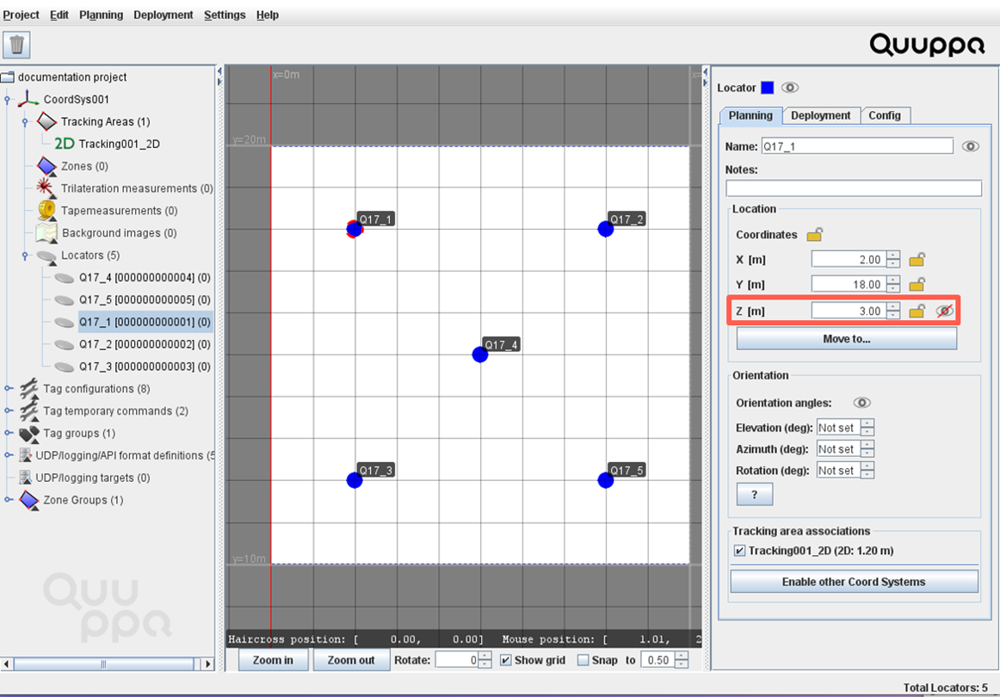
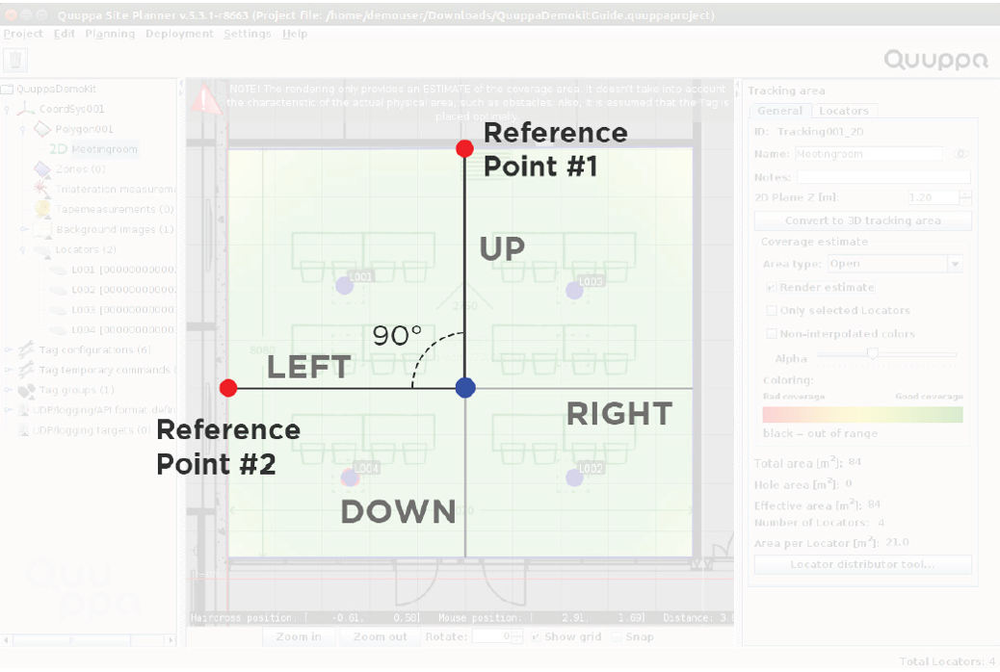
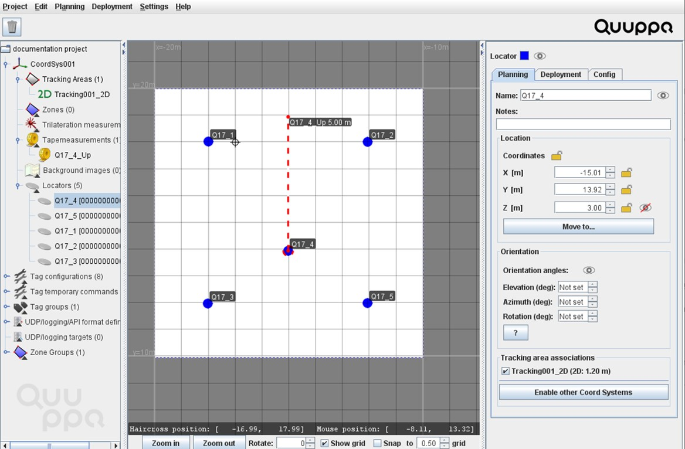
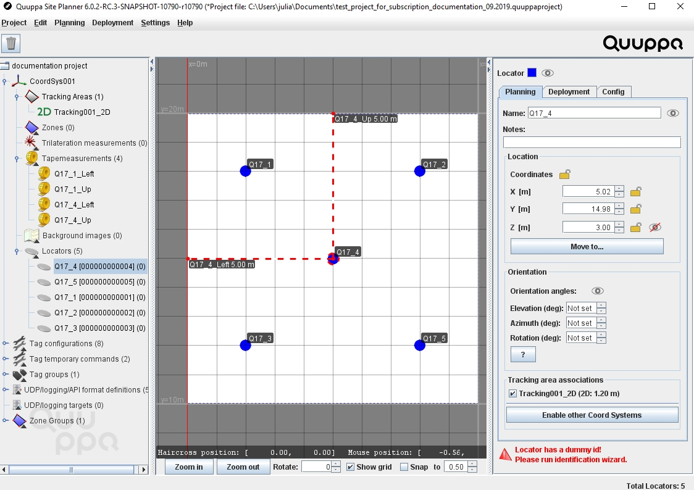
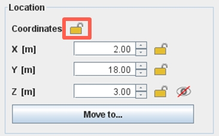
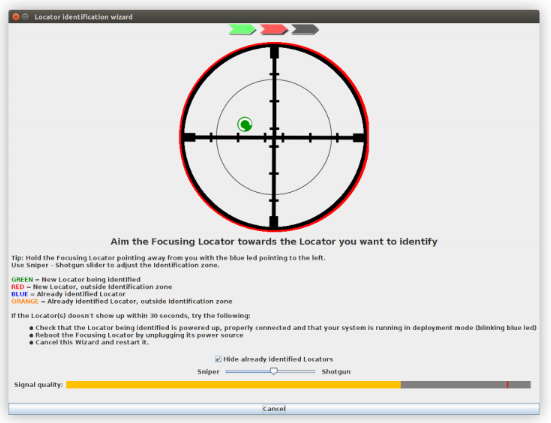
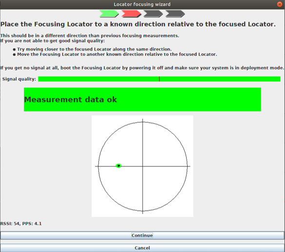
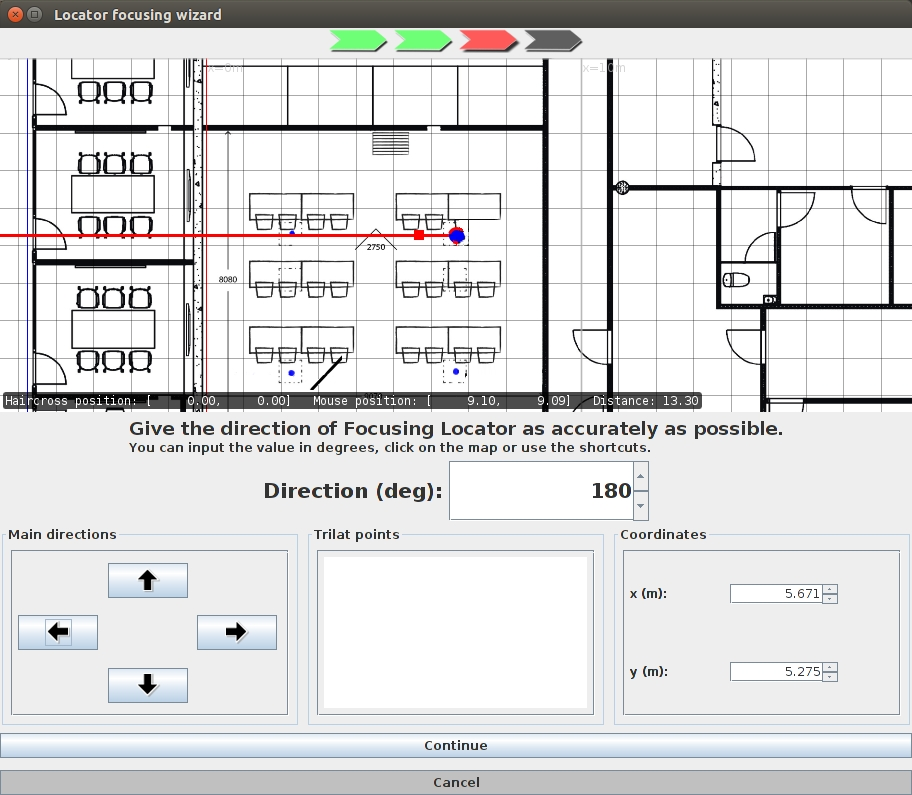
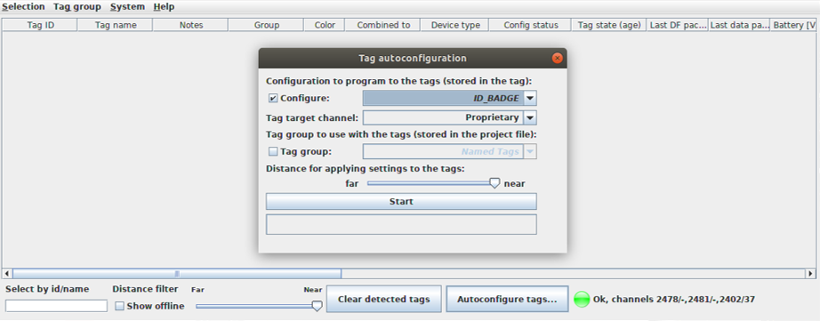
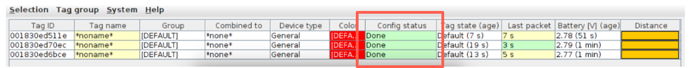

项目部署
现在，系统已物理安装好，可以开始使用 QSP 来部署项目了。在此步骤中，您将测量定位器的位置和方向，使得系统可以计算与已安装的定位器相关的被跟踪项目的定位数据。请在此阶段精心准确地定位、识别定位器和调整定位器焦点，以在以后提高跟踪结果的准确性。您还将配置标记，使得您可以开始跟踪它们。
- 在 QSP 中定位器定位：
- 单击定位器将其选中。
- 测量从地板到定位器中心的高度，并在右侧面板中输入测量值作为 Z 坐标。Note: 我们建议您使用激光测量工具进行测量。这样一来，测量将更加容易，并可提供更准确的结果。

- 选择两个参考点，它们正好相对于定位器的左/右/上/ 下（它们应互相呈 90 度角）。
例如，在下图中，参考点 1 的方向是上，参考点 2 的方向是 左。

- 测量从定位器到正下方第一个参考点的距离，然后通过选择规划 > 添加引导线来使用此测量值添加第一条引导线，并使用顶部的菜单栏添加参考点的方向。在随后打开的窗口中，插入测量值。地图视图中将显示一条红色虚线，以显示添加的引导线。

- 对第二个参考点重复步骤 d. 。
- 通过使用鼠标拖动定位器，使用引导线将定位器移动到正确的位置。参考点的末端应与您在背景图像中选择的参考点匹配。

- 知道了定位器的确切位置后，单击右侧对象信息面板的规划选项卡中坐标标题旁边的小锁图标，锁定定位器的位置。

- 对所有定位器重复步骤 a. - g. 。
- 识别定位器：
- 确保已使用足够长的以太网电缆将对焦定位器连接到 PoE 交换机，可让您轻松地在空间内移动。连接到 PoE 交换机时，指示灯将呈绿色闪烁。
- 在 QSP 中单击定位器将其选中。
- 在右侧的面板中，打开部署选项卡，然后单击启动识别向导按钮。这将打开"识别向导"窗口。
- 如果您的 Q17 对焦定位器尚无有效的许可证，系统将提示您输入 Quuppa 客户门户用户名、密码（若已启用双因素身份验证，则还需要输入双因素身份验证密码）。
- 检查定位器的指示灯呈蓝色闪烁、对焦定位器指示灯呈绿色长亮。如果不是这样，请检查连接，确保 QPE 处于部署模式，然后重新启动该向导。Note: 您可以通过单击 Quuppa 控制器桌面上的 QPE Web 控制台图标来检查 QPE 所处于的模式。
- 让对焦定位器对准所选定位器。调整对准情况，使得点靠近图的中心（点变为绿色），并保持对准，直到信号质量足够好，向导能够识别定位器。Note: 确保您足够接近，以获得质量良好的信号。

- 对所有定位器重复步骤 b. - f. 。
- 调整定位器焦点：
- 在 QSP 中单击定位器将其选中。
- 在右侧的面板中，打开部署选项卡，然后单击启动对焦向导按钮。这将打开"对焦向导"窗口。
- 检查定位器的指示灯呈蓝色闪烁、对焦定位器指示灯呈绿色长亮。如果不是这样，请检查连接，确保 QPE 处于部署模式，然后重新启动该向导。Note: 您可以通过单击 Quuppa 控制器桌面上的 QPE Web 控制台图标来检查 QPE 所处于的模式。
- 执行两次对焦测量的第一次测量：
- 将对焦定位器移动到所选定位器的正左/右 /上 /下方向 （相对于项目的背景图像）。
- 让对焦定位器指向您要对焦的定位器，然后按照“对焦向导”提供的说明执行操作。Note: 确保您足够接近，以获得质量良好的信号。让对焦定位器保持指向定位器，直到应用程序中的绿色条变满，表示测量数据可接受。保持该位置一小会再单击继续按钮，以提高测量精度。
- 使用主要方向框中的箭头，提供调整定位器焦点的来源方向。地图上的红线指示给定的方向。对方向感到满意后，单击继续。

- 四处移动对焦定位器以验证方向是否正确。地图上的黑线应指向对焦定位器的方向。
- 如果方向正确，请单击接受结果并在不同的位置再次测量此定位器。
- 如果方向不正确，请单击忽略此测量并保留旧数据
- 对同一定位器执行两次对焦测量的第二次测量：
- 将对焦定位器移动到第二个位置（同样，恰好移动到所选定位器的正左/右/上/下 方向）。
- 像刚才一样，让对焦定位器指向相同的定位器，然后从新位置重复对焦步骤。Attention: 向导将计算两个测量值之间的误差。尽量让误差级别低于 4.0。如果误差级别高于 4.0，可通过以下步骤重做对焦测量：单击接受结果并退出，接着在对象信息面板中选择部署选项卡，然后单击清除测量数据按钮。现在，您可以再次开始调整定位器焦点了。
- 从两个不同的位置调整好定位器的焦点并在对结果感到满意后，单击接受结果并退出。
- 针对每个定位器重复对焦过程。Note: 要检查位置跟踪是否正常工作，可以转到菜单栏以选择部署 > 显示对焦定位器。在跟踪区域中四处移动对焦定位器，并监控对焦定位器在 QSP 中的位置。要停止监控，请选择部署 > 隐藏对焦定位器
- 配置标记：
- 将对焦定位器（仍然连接到 PoE 交换机）面朝上放置在桌子上。
- 在 QSP 菜单栏中，选择部署 > 标记配置器工具。这将打开一个新的窗口。
- 单击自动配置标记按钮，这将打开一个新的窗口。
- 选中配置复选框，确保配置设置为 ID_BADGE，并且标记目标通道设置为专有。

- 单击开始。
- 按下标记上的按钮以"唤醒标记"，然后将它们放置在对焦定位器的顶部。标记将出现在标记配置器工具窗口中 。Note: 如果您想了解标记是哪一个，可以检查标记背面的标记 ID 号。
- 每个标记的配置状态都显示为完成后，单击停止。

- 关闭标记配置器工具窗口。
- 保存项目。